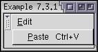

Keyboard Shortcuts
You could use keyboard event handlers to respond to the keyboard. However, it would be tedious to do that for every button and menu item.
Creating a Keyboard Shortcut
XUL provides methods in which you can define keyboard shortcuts. We've already seen in the section on menus that we can define an attribute called accesskey which specifies the key which a user can press to activate the menu or menu item. In the example below, the File menu can be selected by pressing Alt and F (or some other key combination for a specific platform). Once the File menu is open, the Close menu item can be selected by pressing C.
Example 6.3.1: Source View<menubar id="sample-menubar">
<menu id="file-menu" label="File" accesskey="f">
<menupopup id="file-popup">
<menuitem id="close-command" label="Close" accesskey="c"/>
</menupopup>
</menu>
</menubar>You can also use the accesskey attribute on buttons. When the key is pressed in this case, the button is selected.
You might want to set up more general keyboard shortcuts however. For example, pressing Contol+C to copy text to the clipboard. Although shortcuts such as this might not always be valid, they will usually work any time the window is open. Usually, a keyboard shortcut will be allowed at any time and you can check to see whether it should do something using a script. For example, copying text to the clipboard should only work when some text is selected.
XUL provides an element, key, which lets you define a keyboard shortcut for a window. It has attributes to specify the key that should be pressed and what modifier keys (such as Shift or Control) need to be pressed. An example is shown below:
<keyset> <key id="sample-key" modifiers="shift" key="R"/> </keyset>
This sample defines a keyboard shortcut that is activated when the user presses the Shift key and R. The key attribute (note that it has the same name as the element itself) can be used to indicate which key should be pressed, in this case R. You could add any character for this attribute to require that key to be pressed. The modifiers that must be pressed are indicated with the modifiers attribute. It is a space-separated list of modifier keys, which are listed below.
- altThe user must press the Alt key.
- controlThe user must press the Control key.
- metaThe user must press the Meta key. This is the Command key on the Macintosh.
- shiftThe user must press the Shift key.
- accelThe user must press the special accelerator key.
Your keyboard won't necessary have all of the keys, in which case they will be mapped to modifier keys that you do have.
The key element must be placed inside a keyset element. This element is designed for holding a set of key elements, which serves to group all of the key definitions in one place in a file. Any key elements outside of a keyset element will not work.
Each platform generally uses a different key for keyboard shortcuts. For example, Windows uses the Control key and the Macintosh uses the Command key. It would be inconvenient to define separate key elements for each platform. Luckily, there is a solution. The modifier accel refers to the special platform-specific key used for shortcuts. If works just like the other modifiers, but won't be the same on every platform.
Here are some additional examples:
<keyset> <key id="copy-key" modifiers="control" key="C"/> <key id="explore-key" modifiers="control alt" key="E"/> <key id="paste-key" modifiers="accel" key="V"/> </keyset>
The key attribute is used to specify the key that must be pressed. However, there will also be cases where you want to refer to keys that cannot be specified with a character (such as the Enter key or the function keys). The key attribute can only be used for printable characters. Another attribute, keycode can be used for non-printable characters.
The keycode attribute should be set to a special code which represents the key you want. A table of the keys is listed below. Not all of the keys are available on all keyboards.
| VK_CANCEL | VK_BACK | VK_TAB | VK_CLEAR |
| VK_RETURN | VK_ENTER | VK_SHIFT | VK_CONTROL |
| VK_ALT | VK_PAUSE | VK_CAPS_LOCK | VK_ESCAPE |
| VK_SPACE | VK_PAGE_UP | VK_PAGE_DOWN | VK_END |
| VK_HOME | VK_LEFT | VK_UP | VK_RIGHT |
| VK_DOWN | VK_PRINTSCREEN | VK_INSERT | VK_DELETE |
| VK_0 | VK_1 | VK_2 | VK_3 |
| VK_4 | VK_5 | VK_6 | VK_7 |
| VK_8 | VK_9 | VK_SEMICOLON | VK_EQUALS |
| VK_A | VK_B | VK_C | VK_D |
| VK_E | VK_F | VK_G | VK_H |
| VK_I | VK_J | VK_K | VK_L |
| VK_M | VK_N | VK_O | VK_P |
| VK_Q | VK_R | VK_S | VK_T |
| VK_U | VK_V | VK_W | VK_X |
| VK_Y | VK_Z | VK_NUMPAD0 | VK_NUMPAD1 |
| VK_NUMPAD2 | VK_NUMPAD3 | VK_NUMPAD4 | VK_NUMPAD5 |
| VK_NUMPAD6 | VK_NUMPAD7 | VK_NUMPAD8 | VK_NUMPAD9 |
| VK_MULTIPLY | VK_ADD | VK_SEPARATOR | VK_SUBTRACT |
| VK_DECIMAL | VK_DIVIDE | VK_F1 | VK_F2 |
| VK_F3 | VK_F4 | VK_F5 | VK_F6 |
| VK_F7 | VK_F8 | VK_F9 | VK_F10 |
| VK_F11 | VK_F12 | VK_F13 | VK_F14 |
| VK_F15 | VK_F16 | VK_F17 | VK_F18 |
| VK_F19 | VK_F20 | VK_F21 | VK_F22 |
| VK_F23 | VK_F24 | VK_NUM_LOCK | VK_SCROLL_LOCK |
| VK_COMMA | VK_PERIOD | VK_SLASH | VK_BACK_QUOTE |
| VK_OPEN_BRACKET | VK_BACK_SLASH | VK_CLOSE_BRACKET | VK_QUOTE |
| VK_HELP |
For example, to create a shortcut that is activated when the user presses Alt and F5, do the following:
<keyset> <key id="test-key" modifiers="alt" keycode="VK_F5"/> </keyset>
The example below demonstrates some more keyboard shortcuts:
<keyset> <key id="copy-key" modifiers="accel" key="C"/> <key id="find-key" keycode="VK_F3"/> <key id="switch-key" modifiers="control alt" key="1"/> </keyset>
The first key is invoked when the user presses their platform-specific shortcut key and C. The second is invoked when the user presses F3. The third is invoked on a press of the Control key, the Alt key and 1. If you wanted to distinguish between keys on the main part of the keyboard and the numeric keypad, use the VK_NUMPAD keys (such as VK_NUMPAD1).
Using the Keyboard Shortcuts
Now that we know how to define keyboard shortcuts, we'll find out how we can use them. There are two ways. The first is the simplest and just requires that you use the keypress event handler on the key element. When the user presses the key, the script will be invoked. An example is shown below:
<keyset> <key id="copy-key" modifiers="accel" key="C" onkeypress="DoCopy();"/> </keyset>
The function DoCopy will be called when the user presses the keys specified by the key element, which in this example, are the keys for copying to the clipboard (such as Control+C). This will work as long as the window is open. The DoCopy function should check to see if text is selected and then copy the text to the clipboard. Note that textboxes have the clipboard shortcuts built-in so you don't have to implement them yourself.
If you are assigning a keyboard shortcut that performs a command that also exists on a menu, you can associate the key element directly with the menu command. To do this, add a key attribute on the menuitem. Set its value to the id of the key that you want to use. The example below demonstrates this.
Example 6.3.2: Source View<keyset>
<key id="paste-key" modifiers="accel" key="V"
oncommand="alert('Paste invoked')"/>
</keyset>
<menubar id="sample-menubar">
<menu id="edit-menu" label="Edit" accesskey="e">
<menupopup id="edit-popup">
<menuitem id="paste-command" accesskey="p" key="paste-key" label="Paste"
oncommand="alert('Paste invoked')"/>
</menupopup>
</menu>
</menubar>The menuitem's key attribute, which here is paste-key is equal to the id of the defined key. You can use this for additional keys as well to define keyboard shortcuts for any number of menu items.
 You'll also notice in the image that text has been placed next to the Paste menu command to indicate that Control and the V key can be pressed to invoke the menu command. This is added for you based on the modifiers on the key element. Keyboard shortcuts attached to menus will work even if the menu is not open.
One additional feature of key definitions is that you can disable them easily. To do this add a disabled attribute to the key element and set it to the value true. This disables the keyboard shortcut so that it cannot be invoked. It is useful to change the disabled attribute using a script.
Key Example
Let's add keyboard shortcuts to the find files dialog. We'll add four of them, one for each of the Cut, Copy, and Paste commands and also one for the Close command when the user presses Escape.
<keyset> <key id="cut_cmd" modifiers="accel" key="X"/> <key id="copy_cmd" modifiers="accel" key="C"/> <key id="paste_cmd" modifiers="accel" key="V"/> <key id="close_cmd" keycode="VK_ESCAPE" oncommand="window.close();"/> </keyset> <vbox flex="1"> <toolbox> <menubar id="findfiles-menubar"> <menu id="file-menu" label="File" accesskey="f"> <menupopup id="file-popup"> <menuitem label="Open Search..." accesskey="o"/> <menuitem label="Save Search..." accesskey="s"/> <menuseparator/> <menuitem label="Close" accesskey="c" key="close_cmd" oncommand="window.close();"/> </menupopup> </menu> <menu id="edit-menu" label="Edit" accesskey="e"> <menupopup id="edit-popup"> <menuitem label="Cut" accesskey="t" key="cut_cmd"/> <menuitem label="Copy" accesskey="c" key="copy_cmd"/> <menuitem label="Paste" accesskey="p" key="paste_cmd" disabled="true"/> </menupopup> </menu>
Now we can use those shortcuts to activate the commands. Of course, the clipboard commands don't do anything anyway, as we haven't written those scripts.
Key Events
There are three keyboard events that may be used if the key related features described above aren't suitable. These events are listed in the following table:
| keypress | Called when a key is pressed and released when an element has the focus. You might use this to check for allowed characters in a field. | ||
| keydown | Called when a key is pressed down while an element has the focus. Note that the event will be called as soon as the key is pressed, even if it hasn't been released yet. | ||
| keyup | Called when a key is released while an element has the focus. | ||
Key events are only sent to the element that has the focus. Typically, this will include textboxes, buttons, checkboxes and so forth. If no element is focused, the key event will instead be targeted at the XUL document itself. In this case, you can add an event listener to the window tag. Normally though, if you want to respond to keys globally, you will use a keyboard shortcut as described earlier.
The key event object has two properties which hold the key that was pressed. The keyCode property holds the key code and may be compared to one of the constants from the key table earlier in this section. The charCode is used for printable characters and will hold the character code for the key that was pressed.
(Next) Next, we'll find out how to handle focus and the selection.